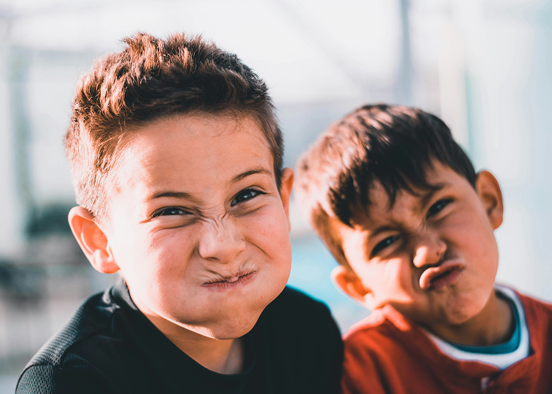

월간 을터뷰
을유문화사가 만난 사람들의 이야기
-
역자
백선희역자 백선희
프랑스어는 섬세하고 미묘한 뉘앙스를 표현하기에 좋은 언어예요. 부정적인 걸 에둘러 표현하려는 완곡어법이 꽤 발달했죠. 죽음을 직접적으로 얘기하지 않기 위해 온갖 방식으로 에둘러 표현하곤 하죠. laisser à désirer 같은 표현은 직역하자면 ‘바랄(욕망할) 거리를 남기다’라는 뜻인데, 실제로 의미하는 바는 ‘불완전하다 / 만족스럽지 못하다’라는 의미죠. 재미난 관용 표현도 많아요. 이를테면, “고양이에게 혀를 주다(donner sa langue au chat)”라는 표현은 ‘답변을 포기한다’는 의미이고, “녹색 손을 가졌다(avoir la main verte)”는 “정원 일을 잘한다”, “왼손만 둘이다(avoir deux mains gauches)”는 “서투른 사람”이라는 뜻이죠. 또 프랑스어는 글을 쓸 때 같은 단어를 반복하지 않으려는 경향이 있어요. 그래서인지 어휘가 굉장히 세분화되어 있죠. 이를테면 동물의 배설물을 가리킬 때도 우리말로는 ‘똥’이라는 하나의 말로 표현하는데, 프랑스어는 배설물의 모양에 따라 전혀 다르게 부르죠. 염소똥은 crottin, 소나 코끼리의 경우는 bouse라고 하고, 닭이나 새 종류는 fiente라고 하고요. 말만 들어도 배설물의 형태가 연상된다고 할까요. 이런 미묘한 뉘앙스나 거기서 연상되는 이미지를 살려서 번역할 수 있으면 좋겠죠.
자세히보기 -
 영화감독
영화감독
박찬욱영화감독 박찬욱
이 영화는 제 작품 중에서도 행간의 감추어진 뉘앙스 같은 게 풍부하고, 그런 것을 더 중시하는 작품이었어요. 그래서 대사 한 줄 한 줄과 단어 하나 하나를 음미할 수 있게 했고, 대사 외에도 씬에서 다음 씬으로 넘어갈 때 생기는 생략과 비약이 있고, 교차 진행을 할 때는 서로 다른 장소에 있는 상황이 하나로 엮이는 것을 상상할 수 있게 했죠. 그것이 (이 영화의) 특징이니까 관객들이 거기서 매력을 느끼지 않았을까 생각합니다.
자세히보기 -
 사진작가
사진작가
신혜림사진작가 신혜림
Floating Figures는 제가 이름 붙인 작업인데요. 말 그대로 ‘떠다니는 무언가’라는 뜻이에요. 폴라로이드에서 유제를 떼어 내 물속에서 건져 내는 ‘폴라로이드 에멀전 리프트’라는 방법으로 만든 작업물이에요. 고전 인화 기법 중 하나인데, 2008년쯤 폴라로이드사의 필름이 단종되면서 최근에 재생산되기까지 공백 기간이 있었고 디지털카메라의 보급으로 인해 많은 사람에게 잊히기도 한 기법이에요. 폴라로이드 에멀전 리프트는 폴라로이드 겉면을 뜯어내고 물에 불리면 아주 얇은 유제층이 물 위를 둥둥 떠다니는데 그걸 종이에 다시 건져 내는 작업이에요. 조금만 잘못 건드려도 찢어질 정도로 약해서 사진을 계속 보살펴 줘야 하고요. 네모반듯했던 프레임은 물속에서 흐르는 듯한 모양으로 종이 위에 얹히는데, 이때 저의 간섭보다는 사진이 자신이 바라는 모양으로 갈 수 있도록 내버려두는 게 저의 일이었어요. 완성되는 사진의 형태는 제가 아닌 이미지 스스로가 만드는 거였어요. 사진가가 하는 일이 저마다 다르겠지만 사진가로서 제가 하는 일은 이미지 그 자체가 하는 말에 귀 기울이고 그들이 가고 싶어 하는 방향으로 갈 수 있게 도와주는 대리인의 역할인 것 같아요.
자세히보기
장학사업
별을 위한
희망 지원사업
-
멘토링
꿈장학사업청소년들을 멘토와 함께 선발하여 멘토 선생님의 교육적, 정서적 지지를 받을 수 있도록 지원하는 사업
자세히보기 -
글로벌
장학사업한인 후손과 개발도상국 청소년·대학생을 교육 지원해 자국 발전을 이끌 인재로 양성
자세히보기 -

방과후학교
대상우수 방과후학교를 운영한 학교·교사·비영리단체를 매년 1월 시상하는 교육부 주최 공동사업
자세히보기 -
리더육성
장학사업우수한 꿈장학생 대학(원)생을 선발해 맞춤형 장학금과 교육으로 미래 리더로 성장 지원
자세히보기 -
배움터
교육지원사업교육 소외 아동·청소년을 위해 지역 배움터들이 협력해 양질의 교육과 교육복지 안전망을 구축하도록 지원
자세히보기 -
청소년 치아교정
지원사업경제적 어려움으로 치료가 어려운 청소년에게 무료 치아교정 기회를 제공해 건강한 성장과 자신감을 지원
자세히보기
WEBZINE
별 약속을 지키다
-
 리더육성 장학사업
리더육성 장학사업더 큰 발걸음을 내딛기 위해 새로운 출발선 앞에 서다
졸업과 함께 인생의 새로운 장을 맞이하게 된 졸업생들의 얼굴에는 정든 재장을 맞이하게 된 졸업생들의 얼굴에는 정든 재
MARCH 2025 -
 리더육성 장학사업
리더육성 장학사업우리의 무한한 가능성을 믿어!
꿈장학생 때부터 간직해 온 목표에 한 발짝 더 다가가게 된 신입 대학 희의장을 맞이하게 된 졸업생들의 얼굴에는 정든 재
MARCH 2025 -
배움터 교육지원사업
친구들과 배우며 익히는 봉사활동의 의미
움터에서 배운 것으로 봉사활동을 할 수 있을까? 여기 한글, 아카펠라, 축장을 맞이하게 된 졸업생들의 얼굴에는 정든 재
MARCH 2025 -
 리더육성 장학사업
리더육성 장학사업언어 장벽을 넘어 희망을 함께 나눈 특별한 순간
더 넓은 세상에서 나눔의 가치를 배우고 실현하고자 대학희망 장학생들이 장을 맞이하게 된 졸업생들의 얼굴에는 정든 재
MARCH 2025 -
리더육성 장학사업
더 큰 발걸음을 내딛기 위해 새로운 출발선 앞에 서다
졸업과 함께 인생의 새로운 장을 맞이하게 된 졸업생들의 얼굴에는 정든 재장을 맞이하게 된 졸업생들의 얼굴에는 정든 재
MARCH 2025